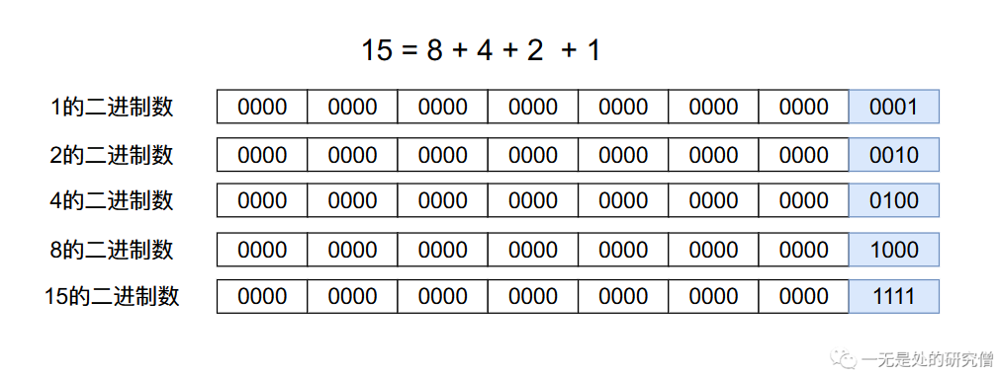

深入剖析多重背包问题（下篇）
前言
在前面的三篇文章当中，我们已经仔细的讨论了01背包问题和完全背包问题以及多重背包上篇，在本篇文章当中主要给大家介绍多重背包问题的一种优化方法——二进制优化多重背包，如果你还没有看过多重背包上篇，你需要先阅读多重背包上篇。
多重背包问题介绍
有 $N$ 种物品和一个容量是 $V$ 的背包。第 $i$ 种物品最多有 $s_i$ 件，每件体积是 $v_i$，价值是 $w_i$。求解将哪些物品装入背包，可使物品体积总和不超过背包容量，且价值总和最大。
注意：上面使用到的字符含义在本篇文章当中都一样。
多重背包问题跟01背包和完全背包的区别都是在物品的可用次数上，01背包只能使用一次，多重背包可用使用无数次，而多重背包可用使用多次。
多重背包的二进制优化
二进制优化的实现
在正式分析多重背包的二进制优化之前，我们先分析一下多重背包的时间复杂度，假设我们有$N$件物品，平均每个物品的个数为$S$，那么多重背包的的时间复杂度为$O(NSV)$。而多重背包的二进制优化可以将这个时间复杂度降低到$O(NVlog(S))$。
在多重背包上篇上篇当中我们提到了多重背包的动态转移方程（ $T = min(S, \frac{V}{v_i})$，其中$S$表示物品能够选择的次数，$v_i$表示物品的体积，$V$表示当前背包的容量）：
$$ dp[i][j] = max\ { \ dp[i - 1][j], \ dp[i - 1][j - v[i]] + w[i],\ dp[i - 1][j - v[i] 2] + w[i] 2, \ ..., \ dp[i - 1][j - v[i] T] + w[i] T\ }
$$ 从上面的公式我们可以知道，对于某个有$S$件的物品当中，我们要选择一个合适的数字使得我们的收益最大，这个数字可能是$1, 2, 3, 4, ..., S$。我们在文章多重背包上篇提到我们可以将多重背包转化成01背包，我们将$S$个物品在逻辑上分成体积和价值相同的$S$个不同的物品，被分成$S$个不同的物品在进行动态选择的时候与$S$个相同的物品是一样的。比如说对于$S$个相同的物品$A$，我们在选择3个的时候收益可以达到最大，那么对于转化之后的01背包问题来说就选择3个与$A$体积和价值相同的物品即可。
根据上面分析我们可以知道多重背包能够转化成01背包的原因就是多重背包在转化为01背包之后，01背包能够有多重背包选1个，选2个，选3个，...，选$S$个的效果。
而我们的二进制优化也主要集中在这个地方。多重背包的二进制优化也是将多重背包问题转化成01背包问题，但是不是将$S$个相同的物品转化成$S$个体积和价值相同的不同的物品。根据上文的分析我们知道，我们在将多重背包转化成01背包之后是需要保证01背包能够实现多重背包选1个，选2个，选3个，...，选$S$个的效果。那么我们如何实现这一点呢？下面代码主要显示二进制优化将多重背包转化成01背包该往装物品的价值和体积的集合里加入什么东西。
Scanner scanner = new Scanner(System.in);
int N = scanner.nextInt();
int V = scanner.nextInt();
ArrayList<Integer> v = new ArrayList<>();
ArrayList<Integer> w = new ArrayList<>();
for (int i = 0; i < N; i++) {
// 这个表示第 i 个物品的体积
int vi = scanner.nextInt();
// 这个表示第 i 个物品的价值
int wi = scanner.nextInt();
// 这个表示第 i 个物品有多少个
int si = scanner.nextInt();
// 这段代码主要是实现多重背包能够选择1个
// 选择2个，...，选择S个的效果
for (int j = 1; j <= si; j *= 2) {
si -= j ;
v.add(vi * j);
w.add(wi * j);
}
if (si > 0) {
v.add(vi * si);
w.add(wi * si);
}
}
我们举一个例子来分析上面的代码，假设我们加入一个物品$A$，它的个数为9，价值和体积分别为5和3。那么在集合$v$和集合$w$当中的数据分别为：
$$ v = [3, 6, 12, 6]
$$
$$ w = [5, 10, 20, 10]
$$
上面的例子将9个$A$分成了$A_1$，$A_2$，$A_3$，以及$A_4$，$A_1$到$A_4$的体积和价值分别相当于1个，2个，4个，2个的$A$的体积和价值。我们在上文当中提到了，我们在将多重背包转化成01背包之后是需要保证01背包能够实现多重背包选1个，选2个，选3个，...，选$S$个的效果，那么上面的转化是如何实现这个效果的呢？
- 一个$A$：相当于$A_1$。
- 两个$A$：相当于$A_2$。
- 三个$A$：相当于$A_1 + A_2$，也就是在动态选择的时候选择了$A_1$和$A_2$两个物品。
- 四个$A$：相当于$A_3$。
- 五个$A$：相当于$A_1 + A_3$，也就是在动态选择的时候选择了$A_1$和$A_3$两个物品。
- 六个$A$：相当于$A_2 + A_3$，也就是在动态选择的时候选择了$A_2$和$A_3$两个物品。
- 七个$A$：相当于$A_1 + A_2 + A_3$，也就是在动态选择的时候选择了$A_1$、$A_2$和$A_3$三个物品。
- 八个$A$：相当于$A_2 + A_3 + A_4$，也就是在动态选择的时候选择了$A_2$、$A_3$和$A_4$三个物品。
- 九个$A$：相当于$A_1 + A_2 + A_3 + A_4$，也就是在动态选择的时候选择了$A_1$、$A_2$、$A_3$和$A_4$四个物品。
相信经过上面的例子之后你已经大致明白了二进制优化的大致实现过程，二进制优化也是将多重背包转化成01背包但是和之前的转化不同的是，我们不是将$S$个物品$A$划分成$S$个体积和价值相同的物品，而是将其划分成体积和价值是原来的物品1倍、2倍、3倍，....，$2^n$倍的物品，即$1 + 2 + 4 + ... + 2^n + a = S$，其中$a$是最后的剩下的余数（$a \lt 2^{n + 1}$），比如上面最后一个2就是a = 9 - 1 - 2 - 4。这样的划分我们可以知道，我们划分之后的物品的数目会少非常多。如果物品的次数的最大值是int类型的最大值，如果我们一个一个的划分最多可以划分超过20亿个物品，而上面的划分方式，我们划分出来的物品不会超过32个，因此大大降低了时间复杂度。
之前一个一个的划分我们的时间复杂度为$O(NSV)$，而像上面那样划分我们最大的时间复杂度为$O(NVlog(S))$，其中$N$表示物品的个数，$S$表示物品能够选择的平均次数，$V$表示背包的容量。
上面就是我们使用二进制优化方式将多重背包转化成01背包的方式，完整代码如下（下方代码使用了单行数组优化）：
import java.util.ArrayList;
import java.util.Scanner;
public class Main {
public static void main(String[] args) {
Scanner scanner = new Scanner(System.in);
int N = scanner.nextInt();
int V = scanner.nextInt();
ArrayList<Integer> v = new ArrayList<>();
ArrayList<Integer> w = new ArrayList<>();
for (int i = 0; i < N; i++) {
int vi = scanner.nextInt();
int wi = scanner.nextInt();
int si = scanner.nextInt();
for (int j = 1; j <= si; j *= 2) {
si -= j ;
v.add(vi * j);
w.add(wi * j);
}
if (si > 0) {
v.add(vi * si);
w.add(wi * si);
}
System.out.println(v);
System.out.println(w);
}
int[] f = new int[V + 1];
for (int i = 0; i < v.size(); i++) {
for (int j = V; j >= v.get(i); j--) {
f[j] = Math.max(f[j], f[j - v.get(i)] + w.get(i));
}
}
System.out.println(f[V]);
}
}
二进制优化的本质
我们知道任何一个数都有他的二进制形式，任何一个数都可以由2的整数次幂相加得到：

假如我们有15个物品$A$，那么我们会得到$A_1$，$A_2$，$A_3$，$A_4$，他们的价值和体积分别是$A$的1倍，2倍，4倍和8倍，这四个物品可以组成相当于任意整数倍的物品$A$的价值和重量，在这个问题当中就是1， 2， 4， 8可以组成1~15之间任意一个数。
因为我们最终可能$S$个物品当中全部选了，因此当我们将多重背包转化成01背包之后，所有转化之后的物品的价值和体积需要和$S$个物品相同，而$S$不一定恰好就是$n$个整数幂的值相加，因此在上文当中还提到了$a$，$a$就保证了我们最终可以取到1~$S$之间任意一个数。
总结
本篇文章主要给大家介绍的多重背包问题的二进制优化，里面的逻辑还是稍微有点复杂的，可能需要大家仔细去体会，大家在看文字的时候可以参考代码仔细分析，可以理解的更好一点。
以上就是本篇文章的所有内容了，希望大家有所收获，我是LeHung，我们下期再见！！！（记得点赞收藏哦！）
更多精彩内容合集可访问项目：https://github.com/Chang-LeHung/CSCore
关注公众号：一无是处的研究僧，了解更多计算机（Java、Python、计算机系统基础、算法与数据结构）知识。